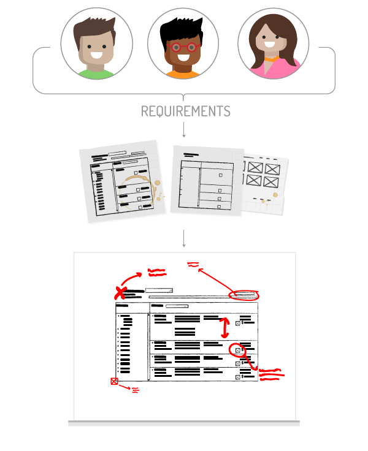
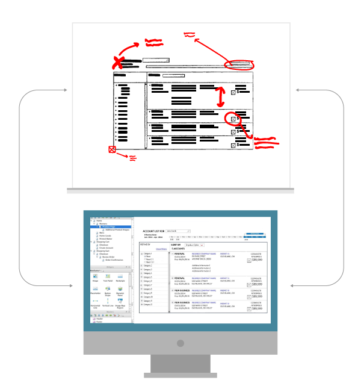
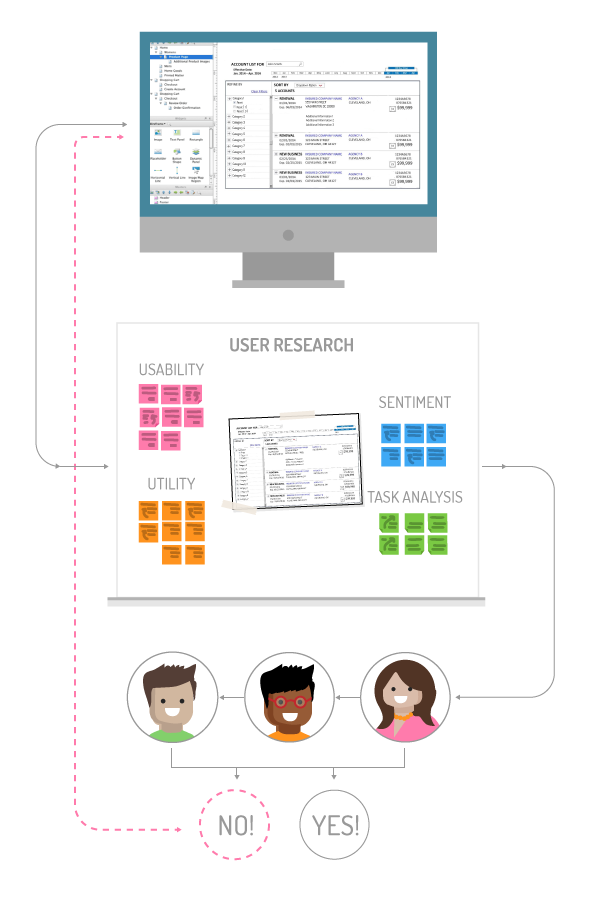

The client’s requested assistance designing procedures to ensure UX integrated into their Agile teams to ensure Releases received ample usability testing, survey examinations, and/or A\B tests of possible designs. Before the request, product owners first reaction to user feedback was often after new designs had been pushed to production

Crafted low and high fidelity wireframes, as well as Axure prototypes with Product Owners and Developers

Lead usability testing, survey design, and concept testing

Documented UX deliverables crafted before and throughout each Release for teams transition from Waterfall to Agile
Product Owners want to minimize risk of building confusing and disjointed experiences. Thus, the implemented procedures focused on understanding the Agile team’s workflow, and defining insertion points for user-centered design procedures
Product Owners want to minimize risk of building confusion and disjointed experiences. Thus, the implemented procedures focused on understanding the Agile team’s workflow, and defining insertion points for user-centered design procedures
As alignment ensued and releases prepared to begin, low fidelity drawings were advanced into prototypes to tighten alignment amongst stake holders. Once confirmed, prototypes were tested by users to ensure the features aligned with users needs and wants
With stakeholders and UX aligned before commencing the release, and the first wave of user feedback collected, updates were applied to improve our first design. And as the release begun, and development snags ensued, significant design revisions were looped through our Collaborative Design and Rapid Prototyping steps
